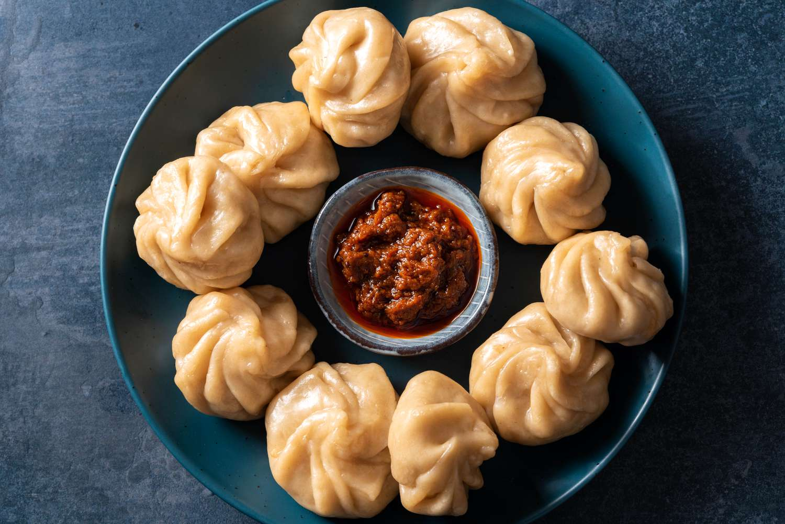

MOMO

Description
Momos are soft, steamed dumplings popular across Nepal, Tibet, and India.
They have a thin dough shell filled with vegetables or meat and are served
with a spicy chutney. They’re light, delicious, and make a perfect snack
or appetizer.
Ingredients
- 1 cup all-purpose flour
- Water (for kneading)
- Salt to taste
- 1 cup finely chopped cabbage
- ½ cup chopped carrots
- ½ cup chopped onions
- 1 tsp ginger-garlic paste
- 1 tbsp oil
- Pepper to taste
Steps
-
Mix flour, salt, and water to knead a soft dough; rest it for 10
minutes.
-
Heat oil and sauté onions, cabbage, carrots, ginger-garlic, pepper, and
salt.
- Roll small dough balls into thin circles.
- Place filling in the center and fold into momo shapes.
- Steam for 10–12 minutes until they look shiny.
- Serve with spicy momo chutney.
HOME